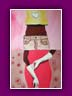
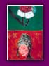

|
|
Ich
bin 1970 in Amsterdam geboren worden. Soweit ich mich
zurückerinnern kann, habe ich mich intensiv mit meinen
Buntstiften beschäftigt, bis ich im Alter von 6 Jahren
schließlich meinen ersten Unterricht im Zeichnen bekam.
Während meines Hochschulstudiums der angewendeten Kunst in Rotterdam
habe ich angefangen, als Freiberuflerin für Tageszeitungen und
Underground-Blätter zu zeichnen. Wenn sich die Gelegenheit ergab,
habe ich auch Artikel geschrieben. In dieser Zeit habe ich
förmlich alles verschlungen, was in irgendeiner Form mit Kunst
zu tun hatte, und mich sogar im Gravieren und Malen versucht.
Wenn
Sie mehr über Karen Gijman erfahren möchten, lesen Sie
bitte folgendes Interview der Zeitschrift ARTBook vom
22. Mai 1999.
------
Würden Sie sich bitte selbst vorstellen?
Ich heiße Karen Gijman, wohne seit meiner Kindheit
in Amsterdam und arbeite als Illustratorin, vor
allem für die Presse.
------
Wie
alt waren Sie, als Sie sich für Ihren künftigen Beruf entschieden
haben?
Schon mit 6 Jahren war mir klar, dass ich in meinem
Leben einfach nur Zeichnen wollte. Das war wie eine
Berufung.
------
Haben
Sie eine besondere Ausbildung genossen?
Ich habe an der Erasmus Universiteit in Rotterdam Kunstgeschichte studiert,
um die für meinen Beruf erforderlichen kulturellen
Referenzen zu vertiefen. Was die Illustrationskunst
betrifft, gehöre ich eher zu den Autodidakten.
------
Welche
Personen oder Persönlichkeiten haben in Ihnen die Vorliebe
für die Illustation geweckt?
Ich habe nie irgendwelche besonderen Vorbilder gehabt, und das
gilt eigentlich bis heute. Dazu kann ich eine kurze Geschichte
erzählen: mit 8 Jahren habe ich beim Zelten mit meiner
Mutter einen anonymen Maler kennengelernt. Er hat Stunden
damit verbracht, die umliegenden Landschaften in Öl zu malen. Ich
erinnere mich daran, dass mich seine Arbeit, die vielen Pinsel
und all das andere Zubehör um ihn herum sehr beeindruckt haben.
Etwas später habe ich ein Buch über den Maler Degas entdeckt und
es wie eine Enthüllung empfunden. Von diesem Moment an habe
ich mich für das Leben der Maler interessiert.
------
Wer
dient Ihnen als künstlerische Referenz im Bereich der Illustration?
Eigentlich habe ich auch da keine Referenzen, aber
es gibt Künstler, für die ich als Mensch eine besondere
Vorliebe hege, wie z. B. Jan Sanders, Johan van Dam
oder Illustratoren für die Jugend, wie z. B. Henriette
Willebeek Le Mair.
------
Lassen
Sie sich von freien Kunstformen der Illustration beeinflussen,
und welchen Platz nehmen sie in Ihrer Inspiration
ein?
Das Kino ist eine stark prägende visuelle Quelle, und natürlich
auch die moderne Kunst. Doch schöpfe ich beim Zeichnen weniger
aus dieser Quelle, als vielmehr aus Büchern, vor allem dem zeitgenössischen
Roman, in dem die Worte das Bild heraufbeschwören. Auf meinen zahlreichen
Reisen bin ich mit sehr eklektischen Formen der Kunst in Berührung
gekommen.
------
Von
welchem Element werden Sie als erstes angesprochen?
Noch während ich den Text lese, den ich illustrieren möchte, entsteht
vor meinem inneren Auge ein Bild.
Das ist eine Art schneller und konzentrierter Synthese.

Wo
werden Ihre Zeichnungen veröffentlicht?
Hauptsächlich in Modezeitschriften, aber auch in
der Tagespresse, kulturell ausgerichtete Zeitschriften
sowie in Büchern für Erwachsene oder Kinder. So habe
ich beispielsweise vor kurzem eine Reihe von Zeichnungen
für die Zeitschrift Cultuur angefertigt.
------
Worin
besteht eigentlich die Arbeit eines Presseillustratoren?
Als Ausgangspunkt dienen die vom Herausgeber zur Verfügung gestellten
Texte. Meine Bilder begleiten die Worte des Autors. Die Illustration
stellt einen engen Zusammenhang zwischen Text und Zeichnung her.
Voraussetzung für die Herstellung dieses Bezugs ist das Textverständnis,
auch wenn die Illustration von diesem Inhalt durchaus etwas abweichen
oder den Text globalisieren darf. Das Zusammenspiel von Titel und
Illustration ist ebenfalls sehr wichtig, da der Titel vom Leser zusammen
mit der Illustration als erstes wahrgenommen wird. Zusätzlich besteht
die Möglichkeit, der Illustration mittels einer Legende eine besondere
Bedeutung zu geben.
------
Haben
Sie schon einmal gedacht, Comics oder Kinderbücher zu illustrieren?
Comics, nein... In einem Comic ist die Zeichnung keine Illustration
mehr, die einen Text begleitet, sondern es ist die Zeichnung selbst,
die die Geschichte erzählt. Das ist ein ganz anderer Beruf.
Im Bereich der Kinderliteratur habe ich allerdings schon gearbeitet,
und es hat mir sehr viel Spaß gemacht. Kinderbücher sind einfach
wundervoll und besonders abwechslungsreich.
------
Wie
würden Sie die Kunst der Illustration mit einigen wenigen
Worten beschreiben?
Die Illustration erfordert vor allem ein sehr einfühlsames
Textverständnis und die Fähigkeit, gleichzeitig die
persönliche Welt des Illustratoren zu vermitteln.
Es geht um das Ausdrücken von Spannungen und Parallelen
zwischen Schrift und Bild.
------
Besteht
ein Zusammenhang zwischen der Illustration und einer
bestimmten Bewegung?
Es gibt keine wirkliche künstlerische Bewegung im
Bereich der Illustration. Meine Zeichnungen sind
vor allem an ihrem naiven Stil und der Leichtigkeit
des Strichs erkennbar.
------
Fertigen
Sie mehrere Skizzen an, bevor Sie mit der endgültigen
Zeichnung beginnen?
Nein, ich mache nur wenige Skizzen. Ich arbeite von
der ersten Zeichnung ausgehend, die mir in den Sinn
kommt, und korrigiere vor allem den Ausdruck und
die Perspektive. Es kommt nur selten vor, dass ich
mehrere Anläufe benötige.
------
Welche Techniken verwenden Sie in Ihren
Illustrationen?
Ich wende im Wesentlichen zwei Techniken an: den
Holzschnitt, mit dem ein sehr starker, synthetischer,
in schwarz und weiß gehaltener Ausdruck erzielt wird,
und Ölfarbe, die das Arbeiten mit Farbe erlaubt.
------
Für welche Themen hegen Sie eine besondere
Vorliebe?
Figuren, ihre Gestalt, ihr Ausdruck, Situationen und einige Landschaften.
------
Welche
Themen könnten Sie absolut nicht illustrieren?
Ich wollte keine vulgären Texte mit meinen Bildern begleiten oder
Texte illustrieren, die von einem ethischen Standpunkt aus gesehen
schokieren.
------
Jede
ihrer Zeichnungen ist natürlich einzigartig, aber
haben Sie nicht vielleicht ein Bild, an dem Sie ganz
besonders hängen?
Doch, und zwar "Kleines Mädchen mit Reifen", an dem
mir der Schwebezustand und die Leichtigkeit besonders
gut gefallen.
------
Was
verbindet Ihre Zeichnungen miteinander?
Humor!
------
An
welchem Projekt arbeiten Sie zurzeit?
Ich habe gerade eine Reihe von Gravuren für eine Modezeitschrift
fertig gestellt und arbeite jetzt an der Illustration eines Kriminalromans
für Jugendliche.
|
| |
 |
 |
|
 |
|
 |
|
Sanne,
2001
|
Australia,
2001
|
Amy,
2001
|
|
Tim
and Lisa, 2000 |
 |
|
 |
 |
|
|
 |
| Ohne
Titel,
2001 |
Fashion,
2002
|
Cat
and Dog,
2002 |
Dream,
2002
|
Women,
2001
|
|
| |
 |
 |
|
 |
|
|
Ohne
Titel,
2002
|
|
Ohne
Titel,
2002 |
Elisabeth,
2002 |
|
|
|
|
De
Amsterdammer - 25. September 1998
Ausstellung
in der Galerie Van der Lamers - Amsterdam
Karen Gijman lebt seit ihrer frühesten Kindheit in Amsterdam. In
einem eher traditionellen Umfeld aufgewachsen ist sie das künstlerische
Element der Familie und zeigt heute ihr Talent in einer Ausstellung neben
den begabtesten Illustratoren für Mode und Werbung. Ihr Stil ist
ohne weiteres erkennbar: delikates Zusammenspiel vibrierender Farben,
realistischer Ausdruck vermischt mit schalkhafter Naivität. Die
mit Bleistift oder Ölfarben angefertigten Zeichnungen sind luftig
leicht und lassen den Betrachter keineswegs unberührt. Absolut
sehenswert!
---------
Cultuur
- 06. November 1999
"Wenn
Muller und Gijman zusammentreffen"
Die unnachahmliche Iva van Muller hat ein neues Kindermärchen geschrieben,
das von einer talentierten Illustratorin mit Zeichnungen versehen
wurde, die das osmotische Gegenstück zur Traumwelt der Autorin
bilden.
Karen
Gijman lädt uns zu einer Reise in eine aus unvollendeten
Strichen hervorgehende farbige Welt ein. Die Bilder nehmen
den Worten hier nichts voraus, sondern fließen sanft
in den Text ein. Die Linien führen den Betrachter auf
einem Streifzug durch eine Scheinwelt, in der Realismus,
Fantasie und Aufrichtigkeit untrennbar miteinander verbunden
sind.
Die
Zeichnungen von Karen Gijman sind mehr als nur Illustrationen,
aus ihnen spricht echte Poesie.
---------
Grafik-art
- 20. April 2001
"Karen
Gijman, die Leidenschaft der Illustration"
Karen lebt ihren Beruf wie eine Leidenschaft. Farben werden aufeinander
abgestimmt, es kommt Leben in das Bild, sie arbeitet schnell, vertraut
auf Ihre Inspiration, verarbeitet blitzschnell Details. Sie zeichnet
mit einer erstaunlichen Mühelosigkeit, als wäre ihre Arbeit ein
Kinderspiel.
Die Schränke quellen über von den vielen Zeichnungen, ganz zu schweigen
von der unglaublichen Menge an Pinseln und halb aufgebrauchten
Tuben. Die Farbe ist allgegenwärtig, belebt Linien und verleiht
Szenen des täglichen Lebens ihre Wärme: hier zieht sich eine Frau
gerade an und dort wurden Schuhe achtlos auf den Boden geworfen.
Bei Karen bekommt das Detail eine neue Dimension, wenn sich Strümpfe,
Kleidungsstücke oder Personen undefinierbaren Alters von einem
zeitlosen Hintergrund abheben.
Von der Liebe zum Detail motiviert sitzt Karen in aller Ruhe auf
ihrer verglasten Veranda inmitten von Pflanzen und Kakteen, und
zeichnet immer wieder eine eiserne Gießkanne. Wie durch Zauber
entsteht ein wahres Feuerwerk aus Grün, Rot und Orange. Diese plastische
Betrachtung des Stilllebens hat sie dazu gebracht, Tausende kleiner
Objekte in ebenso vielen Umgebungen darzustellen: "Für mich
gibt es keine gewöhnlichen Objekte, ich liebe es, ihnen Leben einzuhauchen
und eine andere Dimension zu verleihen, sie in Szene zu setzen
oder einfach unter einem ästhetischen Gesichtpunkt zu betrachten." Die
nahezu kindliche Vorstellungskraft Karens verleiht unscheinbaren
Dingen einen neuen Glanz - eine Huldigung des Alltäglichen.
|
| |
|
|
| |
|
|
Im
Folgenden finden Sie einige besondere
Werke und Orte, die mich berührt und
als Künstlerin beeinflusst haben.
Mein
Viertel: die
Kanäle
Ich
wohne in einem hübschen, im neoklassizistischen
Stil erbauten Haus in der Beethovenstraat,
umgeben von einem Labyrinth aus Wasserstraßen,
das Amsterdam seinen ganz besonderen Charme
und Charakter verleiht. Einige Brücken von
meinem Haus entfernt befindet sich meine Zufluchtsstätte,
das Café Schiller , wo immer ein samtweicher
Sessel auf mich wartet, um genüßlich einen Cappuccino
zu trinken oder ein wenig mit dem Inhaber Gaby
zu diskutieren.
---------
Mein
Museum: Stedelijk
Museum -
13 Paulus Potterstraat - Amsterdam
In
der Stadt Amsterdam befindet
sich eine erstaunliche Anzahl
von Galerien und Kunstmuseen.
Dazu zählt u.a. das Stadtmuseum,
in dem zahlreiche bedeutende
Werke moderner Kunst ausgestellt
werden. Die regelmäßig erneuerte
Sammlung zeigt neben Werken
von Manet, Cézanne, Kandinsky,
Dubuffet auch englische
Pop Art. Seit meiner Kindheit
hat diese Vielfalt einen
entscheidenden Beitrag zur
Entwicklung meines künstlerischen
Sensibilität geleistet.
---------
Mein
Lieblingsbuch: Der
Alchimist - Paulo
Coelho - 1994
"Eine
Suche beginnt immer mit dem
Glück des Anfängers und endet
mit der Prüfung des Eroberers."
In
dieser philosophischen Fabel
kommt ein außergewöhnlicher
Optimismus zum Ausdruck, mit
dem Paulo Coelho den Leser
zum Aufbruch auffordert. Die
Geschichte erzählt die Reise
eines jungen andalusischen
Hirten, der auf die Suche nach
einem traumhaften Schatz geht.
Sein Weg führt ihn schließlich
zu einem Alchimisten, der ihm
den Sinn des Lebens enthüllt.
Dieses Buch richtet sich an
alle Leser, die sich ihre Abenteuerlust
bewahrt haben und wie ich,
ihre ganz persönliche Geschichte
leben möchten.
---------
Mein
Kultfilm: Trainspotting -
Danny Boyle - 1996
"Choose
life. Choose a job. Choose
a career. Choose a family.
Choose a fucking big television,
choose washing machines,
cars, compact disk players
and electrical tin openers.
Choose good health, low cholesterol
and dental insurance. Choose
fixed-interest mortgage repayments.
Choose a starter home. Choose
your friends. Choose DIY
and wondering who the fuck
u are on sunday morning.
Choose sitting on the coach
watching mind numbing, spirit-crushing
game shows, stuffing junk
food into your mouth. Choose
rotting away at the end of
it all, pishing your last
in amiserable home nothing
more than an embarassement
to the selfish, fucked-up
brats you spawned to replace
yourself. Choose your futur.
Choose life. But why would
I want to do a thing like
that? I chose not to choose
life: I chose something else.
And the reasons? There are
no reasons. Who needs reasons
when you've got heroin?" Einführung
Dieser
schonungslose, fantastische und Konventionen
ignorierende Film ist eine Kritik an einer
konservativen, langweiligen und banalen Gesellschaft,
die Dany Boyle in der Geschichte von vier
verkommenen jungen Schotten aus Edinburgh
zum Ausdruck bringt. "Anstößig, brutal und
brandaktuell ist Trainspotting wie ein Clockwork
Orange der 90er Jahre." - Ecran Noir.
---------
Meine
Reisen: Paris -
London - New York
Jede dieser Hauptstädte
hat ihr besonderes Flair:
|
Paris
Wenn Paris nur aus einem einzigen Arrondissement
bestehen würde, wäre es das Viertel
um Montmartre, das einen mit
wenigen Schritten in die Vergangenheit
versetzt. Ich gehe sehr gerne in
dem Labyrinth aus engen Straßen und
Gassen spazieren, die den aufmerksamen
Betrachter mit der Poesie des malerischen
alten Paris umgeben.
|
| |
|
London
Der Camden Lock Market hat sich in London
zu einer Institution entwickelt. Man findet dort
Möbel, Bücher, Schmuck sowie eine Vielfalt klassischer
und exzentrischer Gegenstände. Was diesen Markt
jedoch vor allem auszeichnet, ist das gewaltige
Angebot unterschiedlichster Kleidungsstücke,
die kaum einen Wunsch offen lassen: die Stilpalette
reicht von Großmutters Schuhen bis hin zum futuristischen
Outfit. Dieser Ort übt eine magische Anziehungskraft
auf all diejenigen aus, die gerne in den Straßen
bummeln gehen, nach Schnäppchen Auschau halten
und ihre eigene Originalität zum Ausdruck bringen
möchten. Für mich ist dieser Markt eine unerschöpfliche
Quelle der Inspiration.
|
| |
|
New
York
Mit seinen Bildern,
Skulpturen, Zeichnungen,
Fotografien,
Illustrationen
und sogar Videos,
seiner Architektur
und seinem Design
begeistert das
Museum für moderne
Kunst in New
York, MOMA genannt, den
Besucher von
der ersten Etage
bis hin zu seiner
Boutique. Das
Museum ist im
Besitz zahlreicher
interessanter
Sammlungen, doch
meine Vorliebe
gehört der Ausstellung
des aus Harlem
stammenden Fotografen Roy
de Carava mit
seinen avantgardistischen
Fotos von der
Stadt New
York und den
bedeutendsten
Jazz-Musikern.
|
|
|
|
|
|
|